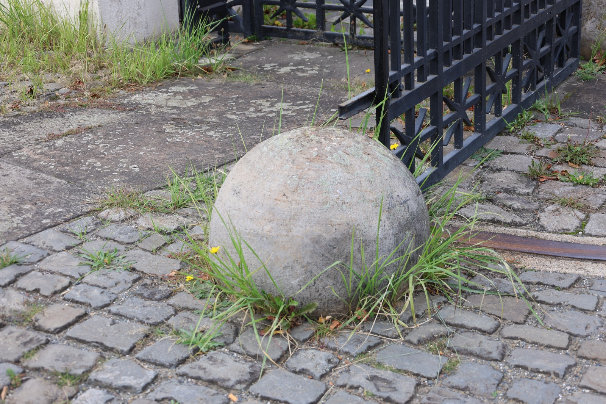
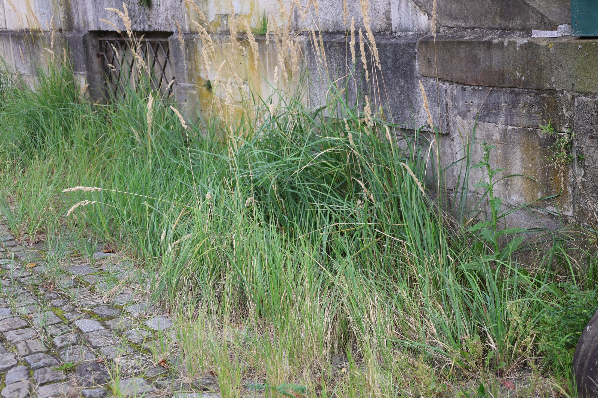
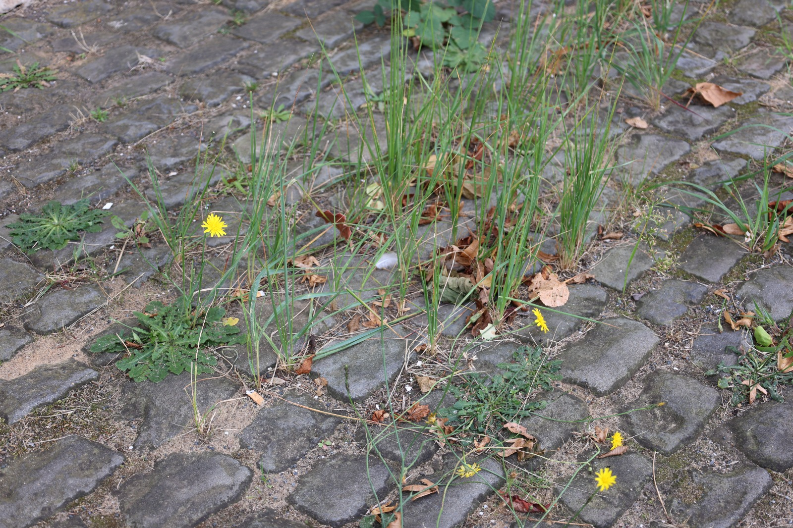
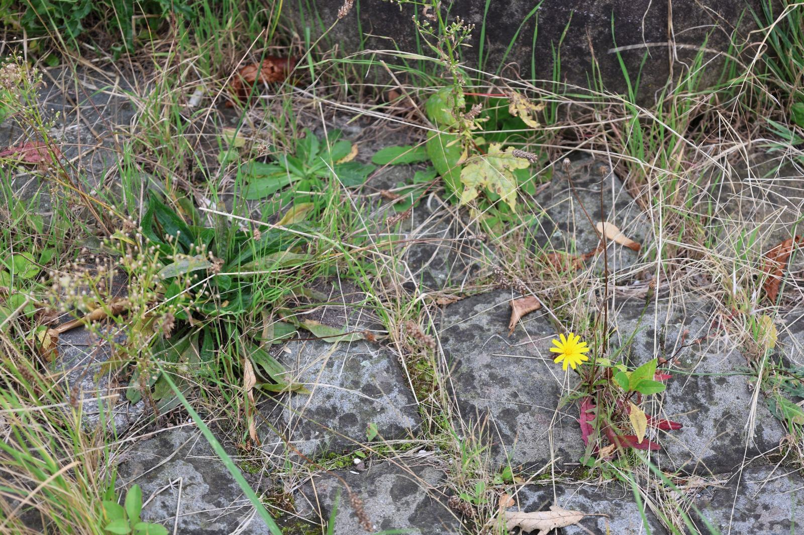
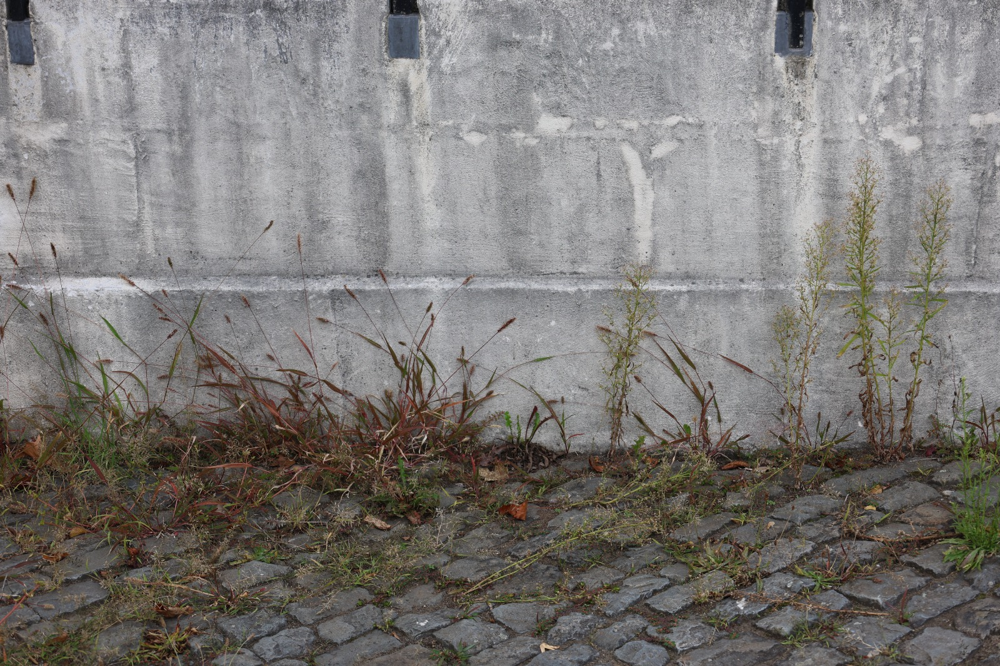
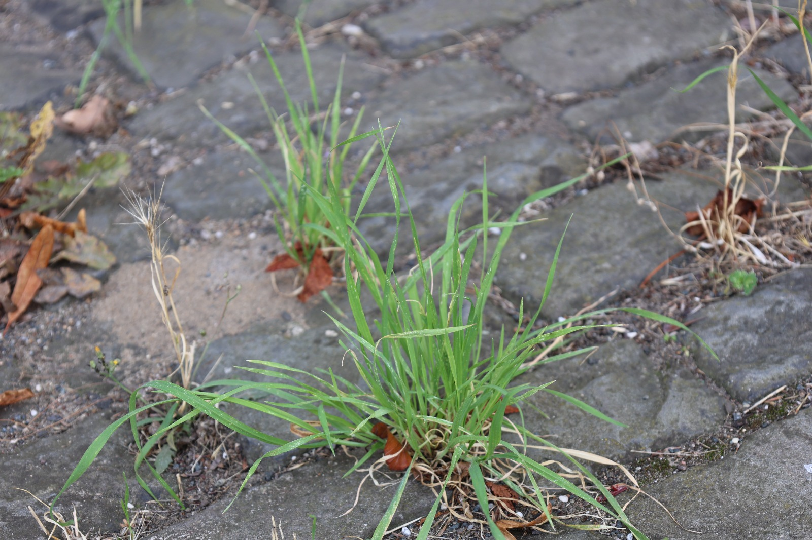
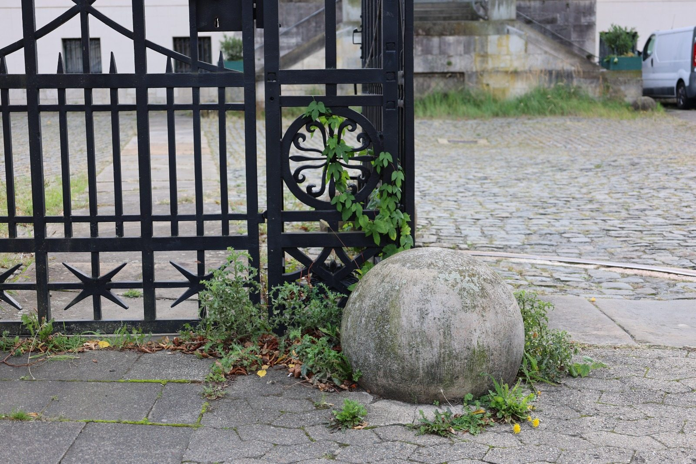
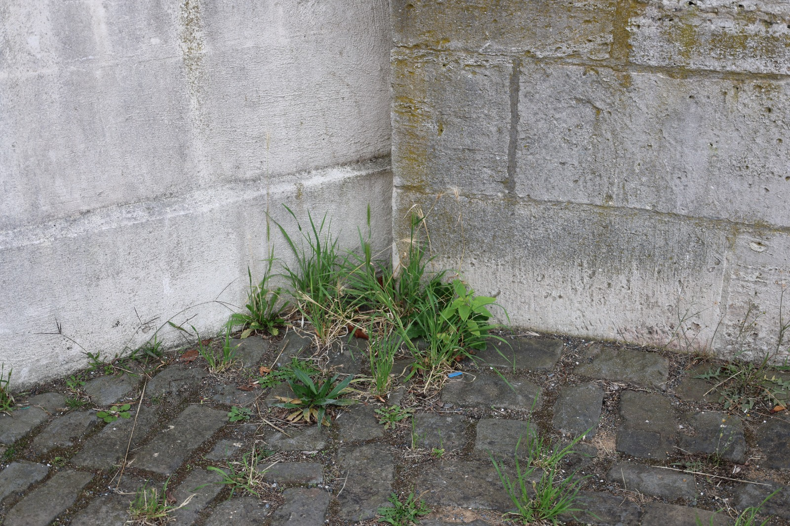
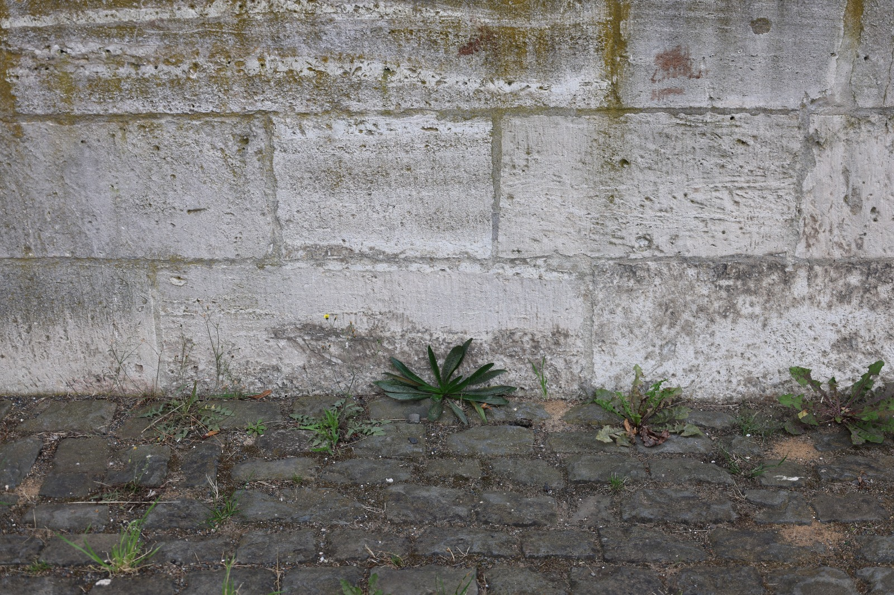

"Weeds" is an instructive architectural program looking into both construction and upkeep of image. In the broadest sense, the term refers to any plant growth in an undesired location, making it a subjective and socialised category. The works instruction defines upkeep as the cultivation of naturally occurring growth.
Following the invitation by Faltpavillon, FT presents "Weeds", a floral arrangement in the courtyard of the Kunstverein Braunschweig.
Faltpavillon is an itinerant exhibition vessel created in 2020 by artists Michael Ray-Von and Finn Curry. The format is a 3 × 3 meter folding tent assembled at a new site for each presentation.









Installation views. Photos by Michael Ray-Von